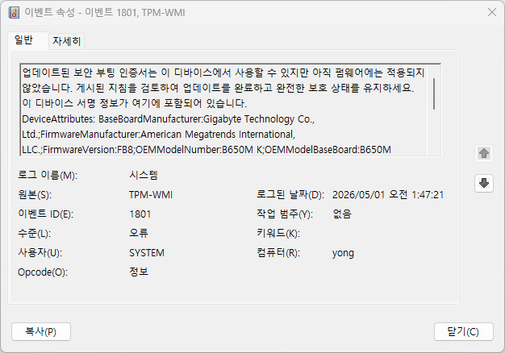

EVENT ID 1801
TPM-WMI 1801 Secure Boot 인증서 업데이트 필요 점검
업데이트된 Secure Boot 인증서가 있지만 아직 펌웨어에 적용되지 않았다는 기록입니다. 마이크로소프트가 진행 중인 Secure Boot 인증서 갱신(2011년 인증서 만료 대응) 롤아웃과 관련이 있습니다.
2011년에 발급된 Windows Secure Boot용 CA 인증서들이 만료 시점에 가까워지면서, 마이크로소프트는 2026년 현재 새 인증서를 순차적으로 배포하고 있습니다. TPM-WMI 1801은 이 새 인증서가 컴퓨터에 도착했지만 UEFI 펌웨어(BIOS)에는 아직 반영되지 않았다는 사전 안내 기록입니다.

당장 부팅이나 기능에 문제를 일으키지 않는 정보성에 가까운 기록이지만, 방치하면 이후 배포될 인증서 전환 시점에 준비가 되지 않은 상태로 남을 수 있어 펌웨어 업데이트를 진행해두는 것이 안전합니다.
발생 조건
- Windows Update 후 시스템 로그에 반복 기록
- 부팅 시 눈에 띄는 증상 없이 조용히 쌓임
- 제조사 인증서를 사용하는 UEFI 펌웨어를 오래 업데이트하지 않은 경우
가능성 높은 원인
- 2026년 진행 중인 Windows Secure Boot 인증서 갱신 롤아웃의 대상인 경우
- 메인보드·노트북 제조사의 펌웨어 업데이트가 아직 적용되지 않은 경우
- 인증서 배포는 됐지만 적용(펌웨어 반영) 단계가 완료되지 않은 경우
점검 순서
- 설정 > Windows 업데이트에서 대기 중인 업데이트·재부팅이 있는지 확인 — 되돌리기 쉬운 항목부터 확인해 위험 없이 범위를 줄입니다.
- 업데이트 기록에서 Secure Boot 관련 업데이트 적용 이력 확인 — 첫 확인 결과와 비교해 원인 후보를 좁힙니다.
- 메인보드·노트북 제조사 홈페이지에서 최신 BIOS·UEFI 펌웨어 확인 및 적용 — 이 단계에서도 반복되면 다음 항목으로 넘어가세요.
- msinfo32를 실행해 보안 부팅 상태가 '켜짐'으로 유지되는지 확인 — 변경 전후로 상태가 달라지는지 비교해보세요.
주의사항
Secure Boot을 임의로 끄지 마세요. 인증서 갱신은 자동으로 진행되는 정상적인 보안 유지보수입니다. 펌웨어 업데이트 중 전원이 끊기면 메인보드가 손상될 수 있으니 노트북은 충전기를 연결한 채 진행하세요.
관련 코드·가이드
자주 묻는 질문
- 이 이벤트가 뜨면 지금 부팅이 안 될 수도 있나요? 아닙니다. 1801은 아직 적용되지 않은 인증서가 있다는 사전 안내 기록으로, 이 자체로 부팅 실패나 기능 장애를 일으키지 않습니다. 다만 방치하면 이후 보안 부팅 관련 기능에 제약이 생길 수 있어 펌웨어 업데이트를 진행하는 것이 좋습니다.
- 제조사 BIOS 업데이트가 아직 안 나왔으면 어떻게 하나요? 메인보드·노트북 제조사가 순차적으로 업데이트를 배포하고 있으므로, 지금 없다면 제조사 지원 페이지를 주기적으로 확인하거나 Windows Update를 통한 자동 배포를 기다리면 됩니다. 급하게 조치할 필요는 없습니다.
최종 검토일: 2026-09-01